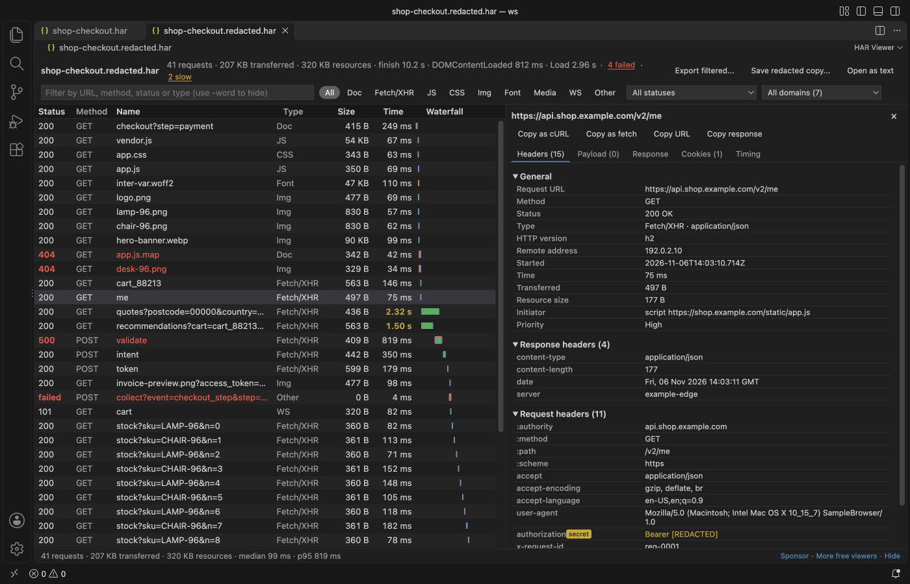

Open files in VS Code and Cursor / Developer files
Remove tokens and cookies from a HAR file before you share it
A HAR file from DevTools holds the Authorization headers, cookies and tokens of your session, and a valid session cookie or token can be used by whoever has the file. HAR Viewer opens the file in VS Code with no network calls and warns when it finds secrets. "Save a Redacted Copy" writes name.redacted.har with those values replaced by [REDACTED]. That is free. Zovo Pro (USD 19 once) adds export to a Postman collection with the same redaction, a compare of two HAR files and CSV export, with 3 free tries each.
Free, MIT license. Extension ID zovo.zovo-har-viewer, version 0.2.2. Needs VS Code 1.90.0 or newer.

Steps in VS Code
- Install HAR Viewer from the Marketplace, or press Ctrl+P (Cmd+P on macOS) and run
ext install zovo.zovo-har-viewer. - In Chrome, Edge or Firefox open DevTools, go to the Network tab and choose "Save all as HAR". Safari calls it "Export HAR".
- Click the
.harfile in the VS Code Explorer. It opens in HAR Viewer, and a banner says when the file holds Authorization headers, cookies or tokens. - Click "Save redacted copy..." in the banner. You can also right-click the file in the Explorer or run "HAR Viewer: Save a Redacted Copy". The suggested name is
name.redacted.har, and the file you opened is never overwritten. - Open the copy. A clean copy opens without the warning. Look over the requests before you send it, because the rules go by header and field names.
Where Zovo Pro saves time
Opening the file, the request table and timing waterfall, request and response details, filters, Copy as cURL, the secrets warning, the redacted copy and "Export filtered..." to a smaller HAR are free.
Often the person who asked for the HAR wants to replay the calls. Export Requests to a Postman Collection saves the requests in the table, or all of them, as a Postman collection v2.1 with one folder per host, with headers and bodies. When the capture holds tokens or cookies it asks first: replace them with [REDACTED] to share the collection, or keep them for your own use. The other two Pro tools compare two HAR files (what got slower, bigger, failed, new or gone) and export the requests to CSV for Excel with every timing phase.
With Postman collection export (Zovo Pro)
- Filter the table to the requests you want to share, or keep all of them.
- Run "HAR Viewer: Export Requests to a Postman Collection (Zovo Pro)" from the Command Palette, or right-click the
.harfile in the Explorer. - Pick "Replace tokens and cookies with [REDACTED]", then where to save
name.postman_collection.json. Import that file in Postman.
Postman collection export works 3 times on your computer before it asks for a license, and a try counts only when you get a result. Opening a file shows no popup and no countdown.
Zovo Pro costs USD 19 once. It is not a subscription, and it turns on the Pro tools in every Zovo extension, not only HAR Viewer. After a card payment (Stripe) your license key shows on the next page. In VS Code, run "Zovo Pro: Enter Zovo Pro license key" from the Command Palette and paste it. The key is checked on your computer, with no network call. With GitHub Sponsors, pick the "$19 one time" tier, then run "Zovo Pro: I already paid: unlock with GitHub Sponsors" and sign in with the same GitHub account. With PayPal, send USD 19 with "Zovo Pro" in the note and the key comes by email within a day.
A team of 5: USD 59 once, by card or by PayPal. Every rule and every Pro tool is on the Zovo Pro page.
Steps in Cursor, Windsurf or VSCodium
- Open the Extensions view with Ctrl+Shift+X (Cmd+Shift+X on macOS).
- Search for
zovo.zovo-har-viewerand click Install. Cursor, Windsurf and VSCodium install from Open VSX, where it is published aszovo/zovo-har-viewer. - If your editor has no gallery, download the .vsix from the Open VSX page and run "Extensions: Install from VSIX...".
- Then use it the same way as in VS Code.
What HAR Viewer handles
- Authorization, Proxy-Authorization, API key, CSRF and similar headers. The Bearer or Basic word stays, so you still see the scheme.
- Cookie and Set-Cookie headers and the HAR cookie lists. Names and attributes stay, and each value is replaced.
- Query, form and JSON fields with names such as
access_token,refresh_token,password,client_secret,api_keyorsession_id, and any JWT, in URLs, request bodies and text response bodies. - Captures up to 300 MB by default (setting
harViewer.maxFileMB).
What it does not do
- The rules are name-based. A secret under an unusual field name, or inside a binary body, is not found, so read the copy before you send it.
- WebSocket frames are not listed yet.
- The viewer is read-only. To change the JSON by hand, use "Open as text".
Other options
- Cloudflare HAR sanitizer. A free, open source web page that removes secrets from a HAR file in your browser.
- A text editor. Search the JSON for "authorization", "cookie" and "token" and replace the values by hand. Slow for a large capture, and easy to miss one.
Install counts and Open VSX status were checked on 12 November 2026. Descriptions in quotes are the extensions' own.
Questions
Why is a HAR file risky to share?
It records the full requests of your browser session, with Authorization headers, cookies and tokens. Whoever has a valid session cookie or token can use it until it expires.
Is my file uploaded?
No. HAR Viewer works offline. It makes no network calls and sends no telemetry.
Does the redacted copy remove every secret?
It replaces values by header and field name, and any JWT. A secret stored under an unusual name, or in a binary body, stays, so read the copy before you send it.
Does it work in Cursor or Windsurf?
Yes. Cursor, Windsurf and VSCodium install extensions from Open VSX. Search for the extension in their Extensions view and install it there.
More about HAR Viewer
Read the HAR Viewer page for every feature and setting, or the source code on GitHub.
Related guides
- Read a HAR file offline in VS Code
- Copy a request from a HAR file as cURL
- Read your Claude Code history in VS Code
- Compare two folders in VS Code
Support this work
If this extension saves you time, you can support the work on GitHub Sponsors. Monthly tiers start at $5, and one-time tiers start at $15. Sponsorship is optional, and the tool works the same without it.
Need your format supported?
Open a format request with a sample file, and I reply there whether it can be done. For USD 299 once, through this GitHub Sponsors tier, I add your file format or a missing feature to this extension, with tests, within 7 days.